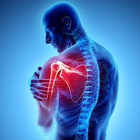
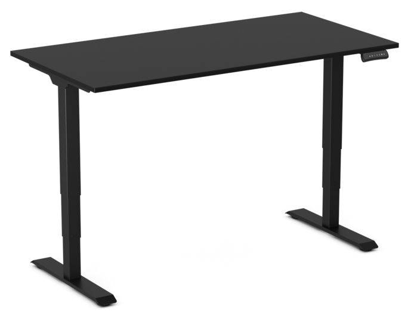

Standing Desk
Sitting for long hours can take a serious toll on your body—leading to back pain, poor posture, and reduced energy levels. Whether you're working from home, tackling creative projects, or grinding through study sessions, a standing desk can make a big difference. It's a simple switch that helps you feel better, move more, and stay focused throughout the day.
Details
Standing desks offer more than just a healthier way to work—they're built for flexibility. With adjustable height settings, you can easily switch between sitting and standing to stay comfortable and focused. Many models also feature swappable tabletops, so you can customize the look and size to fit your space perfectly. It’s a smart upgrade for any workspace.


